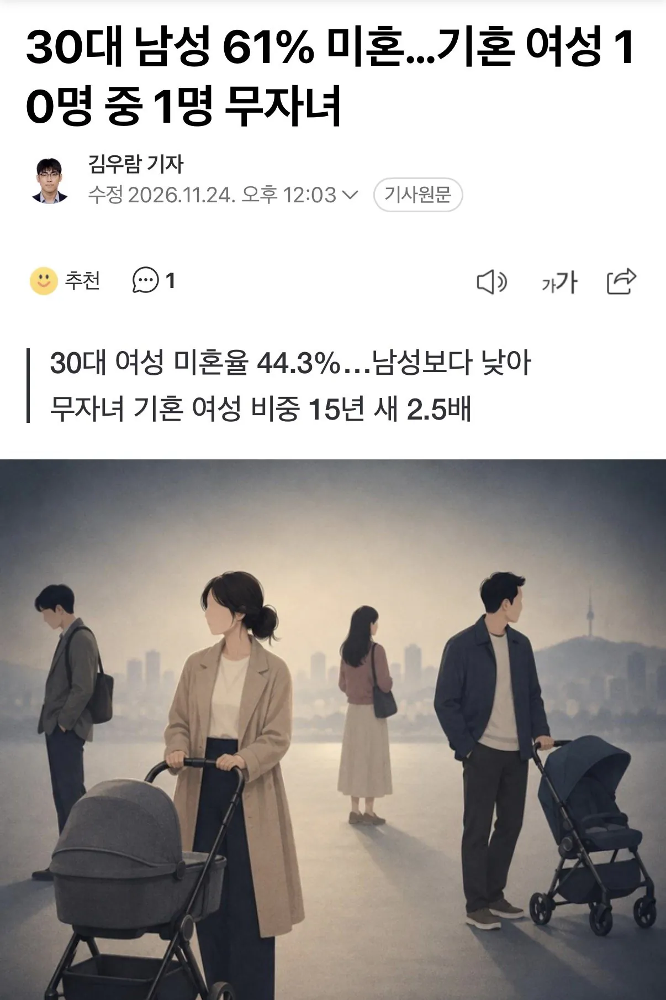
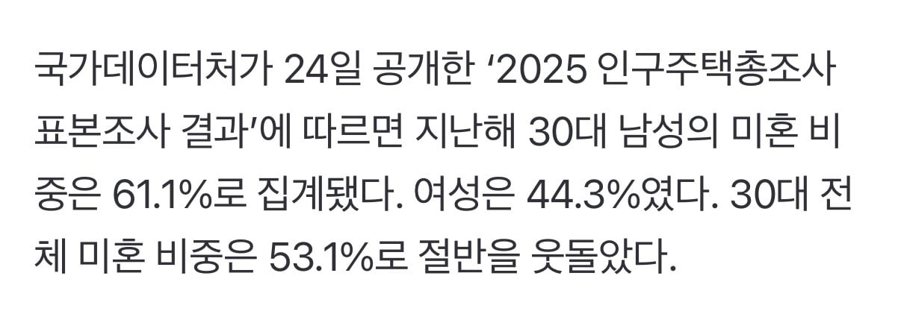

국가데이터처 (구 대한민국 통계청)에서
오늘 [2025년 인구주택총조사] 결과를 공개함
대한민국 30대 남성 61%가 미혼


국가데이터처 (구 대한민국 통계청)에서
오늘 [2025년 인구주택총조사] 결과를 공개함
대한민국 30대 남성 61%가 미혼
애초에 8~90년대 남아선호/베이비붐때 성비박살낫으니 당연한결과지 ㅋㅋ 도태되는 남자는 무조건 남는구조엿음
물론 남 여 모두 선택안되는 개체들 빼고
본케를 아직 키우지도 못했는데 부케를 어케 키우냐